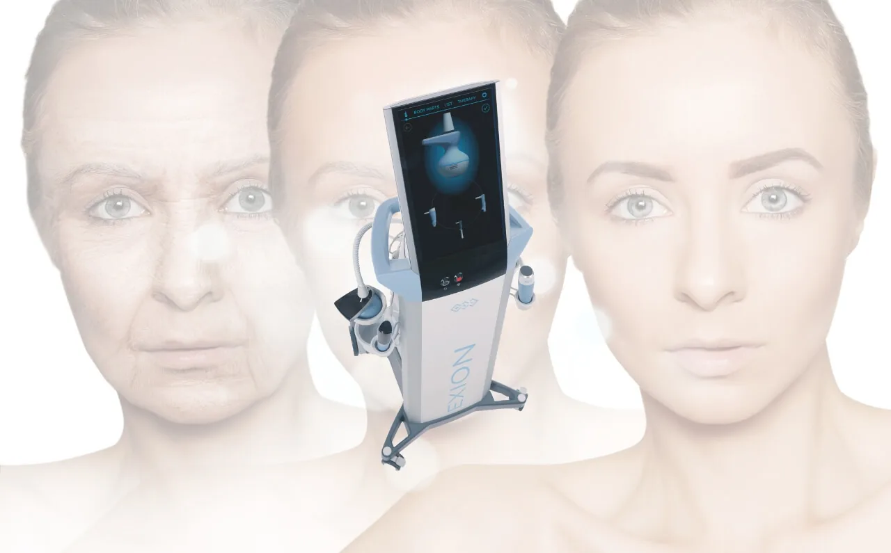
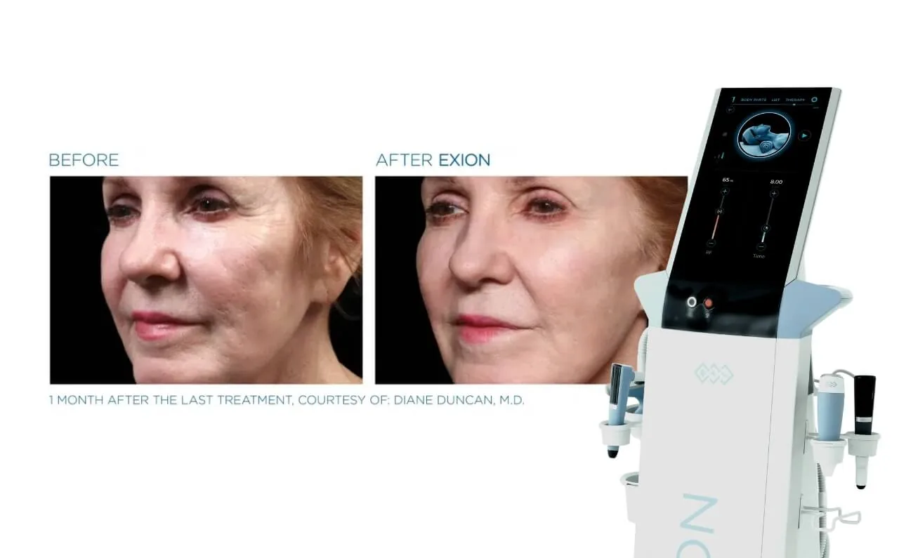
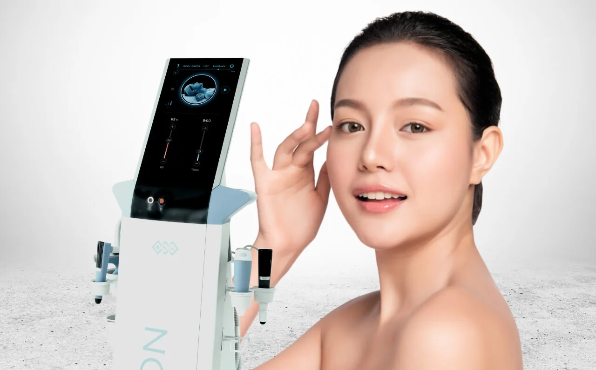
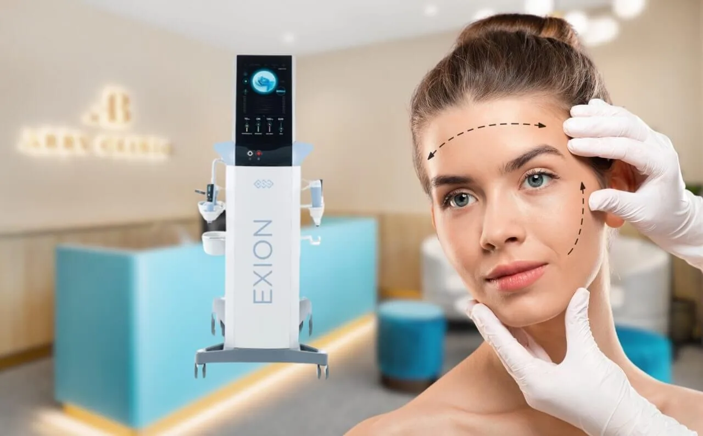

As we move through our 20s, it’s easy to think that the signs of ageing are far off, but the reality is that wrinkles and fine lines can begin to appear earlier than expected. For many, the first signs of ageing show up in their late 20s, often around the eyes, forehead, and mouth. While this may seem surprising, it’s completely natural and, in fact, quite common.
Several factors contribute to the early onset of these fine lines. Reduced collagen production, which starts to decline in your late 20s, is one of the main culprits. Collagen is a protein responsible for keeping skin firm and youthful. Alongside this, environmental stressors like sun exposure, pollution, and lifestyle habits, including stress, poor diet, and lack of proper skincare, can accelerate the ageing process.
Fortunately, there’s no need to panic. Advanced solutions are available that can help combat these early signs of ageing, leaving your skin looking smoother, firmer, and more radiant.
Understanding Early Signs of Ageing
When you approach your late 20s, you may start noticing the first signs of ageing, such as fine lines or wrinkles. While this might seem premature, these early signs are entirely natural and can be traced back to a combination of internal and external factors. Understanding what causes these changes in the skin is the first step in addressing them and maintaining a youthful appearance for longer.
What Causes Wrinkles and Fine Lines in Your Late 20s?
- Collagen and Elastin Decline
Collagen and elastin are essential proteins that help maintain the firmness and elasticity of youthful skin. Collagen provides structure, while elastin allows your skin to stretch and return to its original shape. Unfortunately, as we age, our bodies gradually produce less collagen and elastin. By the time you reach your late 20s, the production of these essential proteins begins to slow down, making your skin more prone to fine lines and wrinkles. This natural decline can lead to a loss of firmness and elasticity, particularly around areas like the eyes and mouth. - Environmental Factors
The environment plays a significant role in the ageing process. Sun exposure is one of the biggest contributors, with UV rays damaging the skin’s collagen and elastin fibres over time. This damage not only accelerates ageing but can also lead to the formation of wrinkles. Additionally, pollution can cause oxidative stress, leading to skin inflammation and further breakdown of collagen, which makes fine lines appear earlier than they would otherwise. - Lifestyle Habits
Your day-to-day habits also influence how your skin ages. Poor skincare routines, such as neglecting sunscreen or failing to moisturise properly, can contribute to the early appearance of wrinkles. Dehydrated skin lacks the plumpness that helps to smooth fine lines. Smoking is another major factor, as it not only reduces blood flow to the skin but also breaks down collagen, leading to premature wrinkles. Poor nutrition, high stress, and insufficient sleep can also negatively impact the skin’s ability to regenerate and stay youthful.
Why Prevention and Early Intervention Are Important

Stress and skin ageing often go hand in hand. Prevention and early intervention are key to maintaining youthful, smooth skin and reducing the visible effects of time.
While these changes are a natural part of life, addressing them early can make a significant difference. Prevention is always better than cure, and starting a skincare routine in your late 20s can help slow down the process and keep your skin looking fresh and youthful. Early intervention allows for more effective treatments and better long-term results. With the right care and the right treatments, you can slow down the visible signs of ageing, preserving the youthful glow of your skin for years to come.
Now that you understand what causes the early signs of ageing, let’s explore how you can combat these changes and restore your skin’s youthful appearance.
Steps to Address Wrinkles and Fine Lines in Your Late 20s
While noticing fine lines and wrinkles in your late 20s can be concerning, the good news is that you can take steps to manage and even prevent further signs of ageing. A combination of healthy skincare habits, lifestyle improvements, and professional treatments can help you maintain smooth, radiant skin.
1. Healthy Skincare Habits
A consistent and effective skincare routine is key to tackling early signs of ageing.
- Hydration: Keeping your skin well-hydrated is crucial for maintaining a plump and youthful appearance. Use a good-quality moisturiser that locks in hydration and supports your skin barrier. Ingredients like hyaluronic acid are particularly effective for boosting moisture levels.
- Sun Protection: UV exposure is one of the leading causes of premature ageing. Applying a broad-spectrum sunscreen with at least SPF 30 every day—yes, even on cloudy days—can protect your skin from UV damage, which accelerates fine lines and collagen breakdown.
- Retinol and Peptides: Retinol, a form of Vitamin A, is a powerful ingredient that stimulates collagen production and speeds up skin cell turnover, helping to reduce fine lines. Peptides, on the other hand, help to repair the skin by boosting its natural protein-building processes. Including these ingredients in your routine can visibly smooth and firm your skin over time.
2. A Balanced Lifestyle
Your lifestyle choices play a major role in how your skin ages. By making small, mindful changes, you can keep your skin healthy and delay the onset of wrinkles.
- Proper Nutrition: A diet rich in antioxidants, vitamins, and omega-3 fatty acids can nourish your skin from within. Focus on foods like leafy greens, berries, fish, nuts, and avocados to help combat oxidative stress and maintain your skin’s elasticity.
- Stress Management: Chronic stress can lead to elevated cortisol levels, which break down collagen and accelerate ageing. Incorporating stress-reducing practices such as yoga, meditation, or even a short daily walk can do wonders for your skin and overall health.
- Adequate Sleep: They don’t call it “beauty sleep” for nothing! Your skin repairs itself during deep sleep, producing collagen and regenerating cells. Aim for 7–8 hours of quality rest each night to keep your skin looking refreshed and youthful.
3. Professional Treatments
While skincare and lifestyle changes are essential, they may not always be enough to reverse early signs of ageing. This is where advanced professional treatments play a vital role.
In-clinic treatments are more advanced and targeted compared to over-the-counter solutions. They deliver results faster and more effectively by addressing the root causes of fine lines and wrinkles, such as collagen loss and reduced skin elasticity.
Treatments like BTL Exion – Face stand out as revolutionary solutions that stimulate collagen production and improve skin texture without invasive procedures.
By combining these three steps—healthy skincare, a balanced lifestyle, and professional treatments—you can take control of your skin’s ageing process and maintain a youthful, radiant glow well into the future.
Introducing BTL Exion – Face: A Revolutionary Solution for Early Ageing

Discover the power of BTL Exion – Face, a cutting-edge treatment that combines monopolar radiofrequency, ultrasound, and AI to promote collagen and elastin production for youthful, radiant skin. Say goodbye to early signs of ageing with this non-invasive solution.
When it comes to addressing early signs of ageing, such as fine lines, wrinkles, and reduced skin elasticity, advanced treatments like BTL Exion – Face have emerged as game-changers. This innovative solution combines cutting-edge technology to rejuvenate your skin safely, effectively, and without the need for invasive procedures.
What is BTL Exion – Face?
BTL Exion – Face is an advanced treatment designed to combat the visible effects of early ageing by stimulating collagen and elastin production—two essential proteins that keep your skin firm, smooth, and youthful.
It utilises a unique combination of:
- Monopolar Radiofrequency (RF): Delivers controlled energy deep into the skin to promote collagen remodelling and skin tightening.
- Ultrasound Technology: Enhances the effectiveness of RF by allowing precise delivery of energy, ensuring better penetration for optimal results.
- Artificial Intelligence (AI): Ensures treatments are tailored to your skin’s unique needs, delivering safe and consistent results.
BTL Exion – Face is non-invasive, meaning there’s no need for needles or surgery. It’s a safe, comfortable, and highly effective treatment for anyone looking to restore their skin’s natural glow and smooth out early wrinkles and fine lines.
How BTL Exion – Face Works

Experience the transformative power of BTL Exion – Face! See how this cutting-edge technology delivers smoother, firmer, and more youthful-looking skin with visible results.
The effectiveness of BTL Exion – Face lies in its dual-action approach, combining radiofrequency and ultrasound technologies to rejuvenate your skin from within.
- Stimulating Collagen and Elastin Production
The treatment works by delivering controlled energy to the deeper layers of your skin. This energy gently heats the targeted areas, triggering your body’s natural healing response. As a result, collagen and elastin production is boosted, improving skin elasticity, firmness, and texture over time. - Precision and Deep Penetration
Thanks to the integration of ultrasound technology, the RF energy penetrates deeper into the skin with exceptional precision. This ensures that the treatment targets the underlying structures where ageing begins, without harming the surface layer of your skin. - Safe and Comfortable Experience
With the assistance of artificial intelligence, BTL Exion – Face adapts to your skin’s unique needs, ensuring that the energy levels are safe, consistent, and comfortable throughout the session. There’s minimal to no downtime, making it an ideal treatment for busy individuals.
Why BTL Exion – Face Stands Out

Discover the power of BTL Exion Face – a cutting-edge treatment that promotes collagen production for a youthful, radiant complexion. Let the technology work wonders for your skin.
- Non-Invasive: No needles, incisions, or lengthy recovery times.
- Fast Results: Noticeable improvements in skin texture and fine lines in just a few sessions.
- Suitable for All Skin Types: Effective and safe for various skin tones and conditions, ensuring personalised results for everyone.
- Comfortable and Convenient: Minimal discomfort during the procedure with no disruption to your daily routine.
With BTL Exion – Face, you can effectively address fine lines, wrinkles, and other early signs of ageing while promoting long-term skin health. It’s the perfect solution for anyone looking to restore youthful radiance without undergoing invasive treatments.
Benefits of BTL Exion – Face for Late 20s Skin
As you begin to notice the early signs of ageing in your late 20s, BTL Exion – Face offers a range of impressive benefits that can rejuvenate your skin and restore its youthful radiance. Here’s how this advanced treatment can help address wrinkles and fine lines effectively:
1. Encourages Collagen and Elastin Production for Tighter, Smoother Skin
Collagen and elastin are essential for maintaining skin’s elasticity and structure, but as we age, their production naturally declines. BTL Exion – Face works by stimulating the production of these key proteins deep within the skin, leading to firmer, smoother, and more youthful-looking skin. By boosting collagen and elastin, the treatment helps to restore volume and elasticity to areas that may have started to sag or show early wrinkles.
2. Improves Skin Texture and Reduces Fine Lines
Over time, fine lines and uneven skin texture can become more apparent, especially in areas like around the eyes, mouth, and forehead. BTL Exion – Face targets these concerns by encouraging skin renewal and resurfacing, leading to improved skin texture and a reduction in fine lines. This results in skin that feels smoother, looks fresher, and has a more even tone.
3. Customisable Treatments for Various Skin Types
One of the standout features of BTL Exion – Face is its customisability. The treatment can be adjusted to meet the specific needs of different skin types and conditions. Whether your concern is mild fine lines or slightly more advanced signs of ageing, the treatment can be tailored to suit your skin’s unique needs, providing optimal results.
This flexibility ensures that every individual can benefit from a personalised, effective treatment plan.
4. Non-Invasive with Minimal to No Downtime
Unlike traditional surgical facelifts or other invasive treatments, BTL Exion – Face is a non-invasive solution that doesn’t require any needles, cuts, or stitches. This means you can achieve noticeable improvements without worrying about long recovery times. In fact, many people experience minimal downtime, allowing them to return to their normal activities almost immediately.
The comfort and convenience of this treatment make it ideal for those with busy schedules who want to enhance their skin without disruption.
Why Choose Dr Abby Clinic for BTL Exion – Face Treatments?

Experience advanced skin rejuvenation with BTL Exion at Dr Abby Clinic. Our expert aestheticians use cutting-edge technology to help you achieve youthful, radiant skin. Book your consultation today!
When it comes to addressing the early signs of ageing, such as fine lines and wrinkles, it’s essential to choose a clinic that combines expertise, advanced technology, and a personalised approach. Dr Abby Clinic offers all of this and more, ensuring you receive the best possible care for your skin. Here’s why you should consider Dr Abby Clinic for your BTL Exion – Face treatments:
1. Expertise of Trained Professionals and Use of Advanced Technology
At Dr Abby Clinic, you’ll be in the hands of skilled professionals who are experts in aesthetic treatments. Our team has been extensively trained in the latest technologies, ensuring that each treatment is carried out with precision and expertise. We use cutting-edge equipment, such as the BTL Exion – Face, which combines monopolar radiofrequency, ultrasound technology, and AI to provide the most effective and safe results for your skin.
2. Personalised Treatment Plans Tailored to Individual Skin Needs
We understand that every person’s skin is unique, which is why we offer personalised treatment plans. When you visit Dr Abby Clinic, we’ll take the time to assess your skin’s specific needs and concerns. Whether you’re dealing with early wrinkles, fine lines, or loss of firmness, we will customise the BTL Exion – Face treatment to address your individual skin concerns, ensuring optimal results that are tailored just for you.
3. Commitment to Delivering Safe, Effective, and Professional Care
Your safety and satisfaction are our top priorities. At Dr Abby Clinic, we are committed to providing a professional, caring environment where you can feel confident in your treatment. All our procedures are performed with the utmost attention to safety, ensuring you achieve the best results in a comfortable and welcoming setting. Our approach is focused on delivering both effective and long-lasting results, so you can enjoy smoother, firmer, and more youthful skin with complete peace of mind.
With our expertise, advanced technology, and personalised approach, Dr Abby Clinic is the ideal choice for BTL Exion – Face treatments.
Let us help you address the early signs of ageing with the care and precision you deserve. Book your consultation today!
Categories
Related treatments